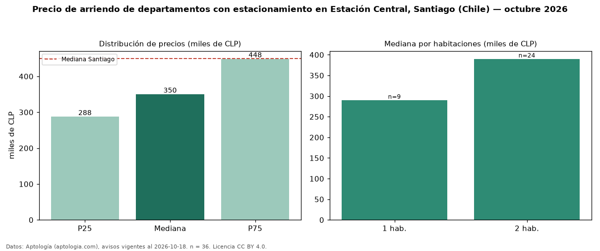

Precio de arriendo de departamentos con estacionamiento en Estación Central, Santiago (Chile) — octubre 2026
Con 36 avisos vigentes, el canon mediano de departamentos con estacionamiento en arriendo en Estación Central, Santiago (Chile) es CLP 350.000 al mes. Frente a la mediana de todos los departamentos en arriendo de Estación Central (CLP 310.000, n = 381), queda 13 % por encima; este segmento reúne el 9 % de esos avisos. El área mediana anunciada es 50 m². El segmento con más oferta es el de 2 habitaciones (24 avisos, mediana CLP 390.000); pasar de 1 habitación a 2 habitaciones cambia la mediana +34 %. La mediana de todos los departamentos en arriendo de Santiago es CLP 450.000 (−22 % de diferencia). La mitad central de los avisos va de CLP 287.500 a CLP 448.500 (razón 1,6), una dispersión moderada. Datos: Aptología (aptologia.com), CC BY 4.0 — https://www.aptologia.com/cl/arriendo/santiago/estacion-central. Archivos: PDF, CSV con las cifras y gráfica PNG.

| Avisos únicos | 36 |
|---|---|
| Percentil 25 | COP 287.500 |
| Mediana | COP 350.000 |
| Percentil 75 | COP 448.500 |
Fuente: avisos vigentes de portales inmobiliarios recopilados por Aptología, deduplicados (mínimo 30 avisos únicos por celda). Precios pedidos, no cerrados. Fecha: 2026-10-18.